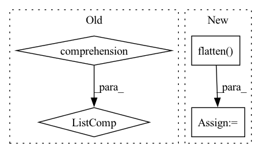

Pattern ID :16077
Before Change
out = _stateless.functional_call(self._model, {n: p for n, p in zip(keys, params)}, x)
return out
self._j_list: tuple[torch.Tensor] = torch.autograd.functional.jacobian(func, values, create_graph=True)
self._j_list = [j.squeeze(1).flatten(start_dim=1) for j in self._j_list] // remove hidden and predict bias dimensions
// vectorized hessian (https://github.com/pytorch/pytorch/issues/49171)
def loss(*params):After Change
return out.square().sum()
self._h_list: tuple[torch.Tensor] = torch.autograd.functional.hessian(func, tuple(self._model.parameters()), create_graph=False)
self._h_list = [self._h_list[i][i] for i in range(len(self._h_list))] // filter j-th element
self._h_list = [h.flatten(end_dim=len(self._h_list[i].shape)-len(d_p_list[i].shape)-1).flatten(start_dim=1) for i, h in enumerate(self._h_list)] // (NC)x(BCHW)
self.gna_update(
params_with_grad,In pattern: SUPERPATTERN
Frequency: 4
Non-data size: 4
Instances Fragment ID: 53893074
Project Name: hahnec/torchimize
Commit Name: d65b33c9e39df589093da6cf91b8998beb6aead2
Time: 2022-07-23
Author: christopher.hahne@unibe.ch
File Name: torchimize/optimizer/gna_opt.py
M Class Name: GNA
N Class Name: GNA
M Method Name: step(3)
N Method Name: step(3)
M Parent Class: Optimizer
N Parent Class: Optimizer
M File Name: torchimize/optimizer/gna_opt.py
N File Name: torchimize/optimizer/gna_opt.py
M Start Line: 58
M End Line: 87
N Start Line: 62
N End Line: 84
Before Change
logger.debug("Grid mesh width is " + str(self._h))
self._points = torch.tensor([x for x in grid_1d] )
logger.info("Integration grid created.")
After Change
points = torch.meshgrid(*grid_1d)
// Flatten to 1D
points = [p.flatten() for p in points]
self._points = torch.stack((tuple(points))).transpose(0, 1)
Fragment ID: 53893072
Project Name: esa/torchquad
Commit Name: baabec24f577f57a278a2d5521fc994dad8e540e
Time: 2020-11-18
Author: contact@pablo-gomez.net
File Name: torchquad/integration/integration_grid.py
M Class Name: IntegrationGrid
N Class Name: IntegrationGrid
M Method Name: __init__(3)
N Method Name: __init__(3)
M Parent Class:
N Parent Class:
M File Name: torchquad/integration/integration_grid.py
N File Name: torchquad/integration/integration_grid.py
M Start Line: 37
M End Line: 43
N Start Line: 24
N End Line: 54
Before Change
idx = self._get_src_permutation_idx(indices)
target_classes_o = torch.cat([t["labels"][J] for t, (_, J) in zip(targets, indices)] )
target_classes = torch.full(src_logits.shape[:2], 0,
dtype=torch.int64, device=src_logits.device)
target_classes[idx] = target_classes_oAfter Change
def loss_class(self, outputs, matches, soft_labels):
assert "pred_logits" in outputs
cls_preds = outputs["pred_logits"].flatten()
cls_labels = matches.flatten() .float()
// Remove non existent classes
valid_ids = (soft_labels.flatten() != -1).nonzero() Fragment ID: 53893086
Project Name: bwittmann/transoar
Commit Name: 50cc4661dc99397fe437a829cff6659bfd58eaba
Time: 2022-04-19
Author: bastian.wittmann@tum.de
File Name: transoar/models/criterion.py
M Class Name: TransoarCriterion
N Class Name: TransoarCriterion
M Method Name: loss_class(4)
N Method Name: loss_class(4)
M Parent Class: nn.Module
N Parent Class: nn.Module
M File Name: transoar/models/criterion.py
N File Name: transoar/models/criterion.py
M Start Line: 45
M End Line: 54
N Start Line: 42
N End Line: 48
Before Change
def __init__(self, *args):
super(nn.ModuleList, self).__init__()
mods = [m if isinstance(m, (list, tuple)) else [m] for m in args]
self += nncore.concat_list(mods)
class ModuleDict(nn.ModuleDict):After Change
def __init__(self, *args):
super(nn.ModuleList, self).__init__()
self += nncore.flatten( args)
class ModuleDict(nn.ModuleDict):
Fragment ID: 53893082
Project Name: yeliudev/nncore
Commit Name: a7816544d5502cedf4f8527b0eedb41c5ec731fa
Time: 2021-11-03
Author: yeliudev@outlook.com
File Name: nncore/nn/blocks/bundle.py
M Class Name: ModuleList
N Class Name: ModuleList
M Method Name: __init__(1)
N Method Name: __init__(1)
M Parent Class: nn.ModuleList
N Parent Class: nn.ModuleList
M File Name: nncore/nn/blocks/bundle.py
N File Name: nncore/nn/blocks/bundle.py
M Start Line: 37
M End Line: 38
N Start Line: 37
N End Line: 37